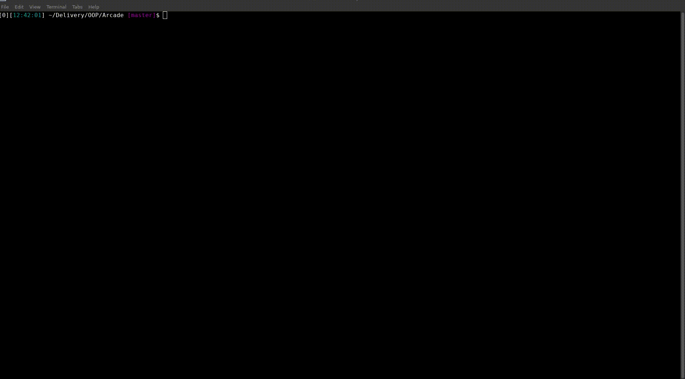
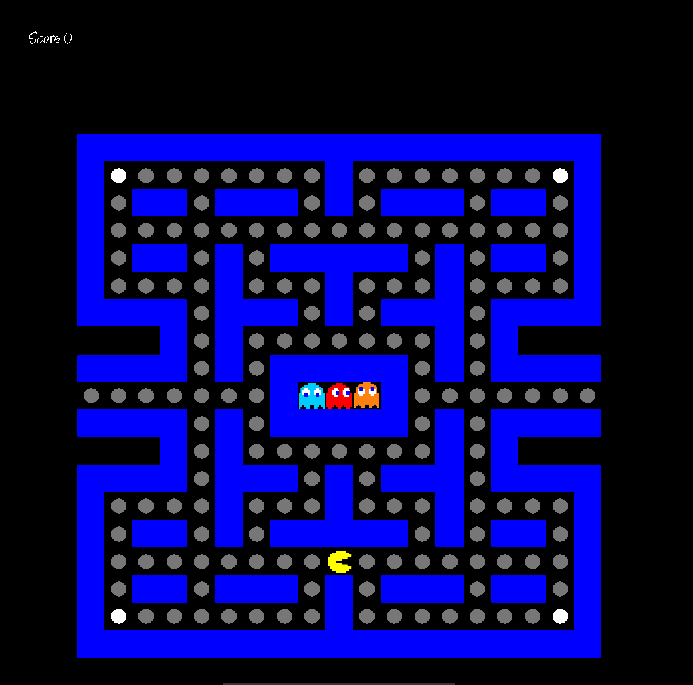
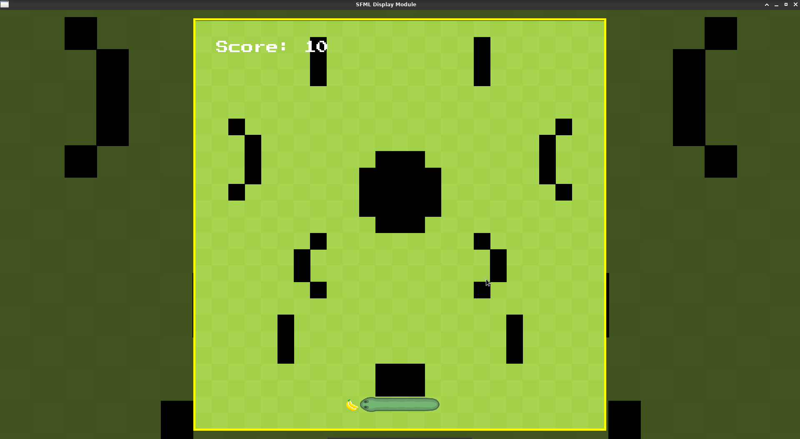
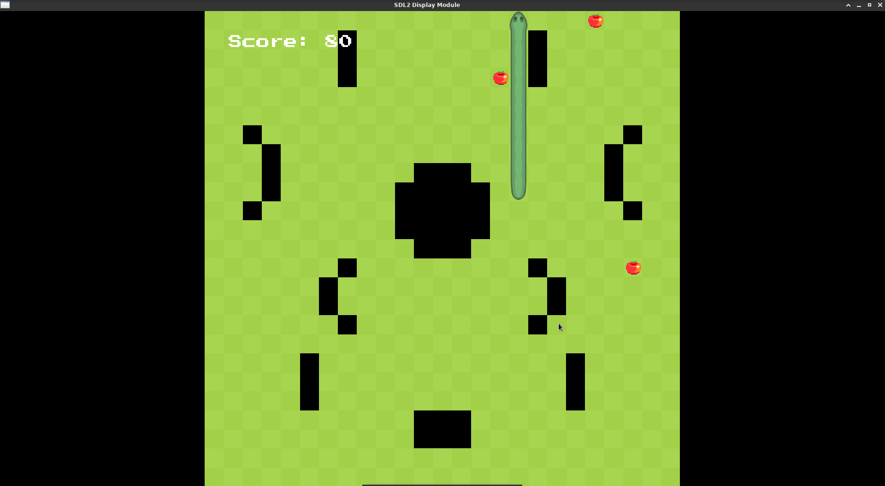
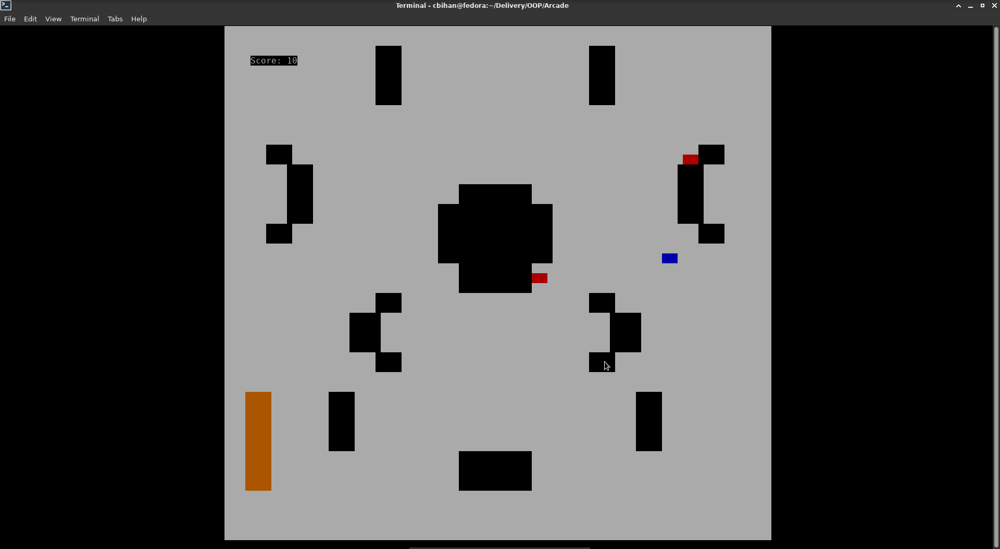

Wanda Vision
Epitech's Arcade project
Exemples
 Here the nibbler game with our sfml display
 Pacman game with our sdl2 display
Display differences
The difference in game display between SFML, SDL2, and Ncurses
- SFML 
- SDL2 
- NCURSES 
Documentation
Wanda Vision's contributors:
Arcade project mates (common interfaces):
Group: Bad Nintendo
Group: Capcom will learn from us (losers of the dice)